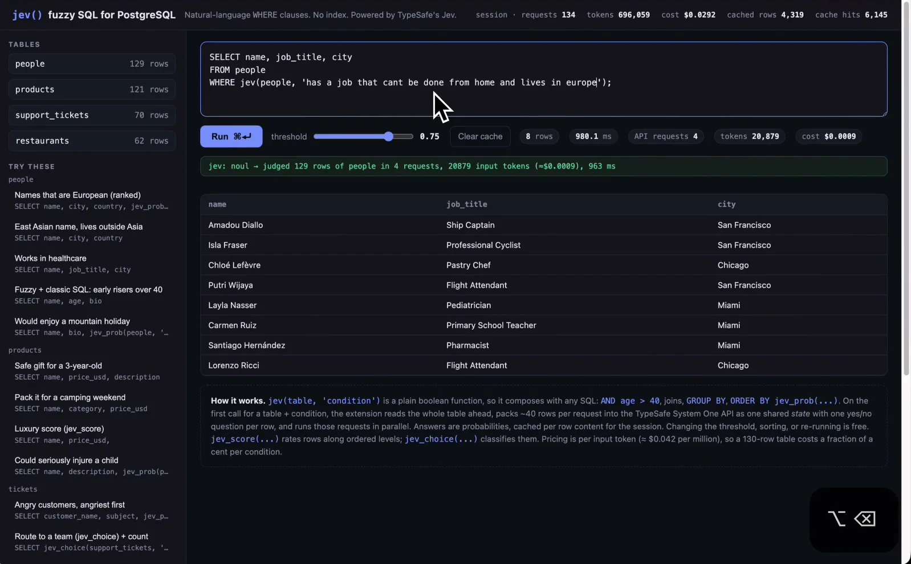
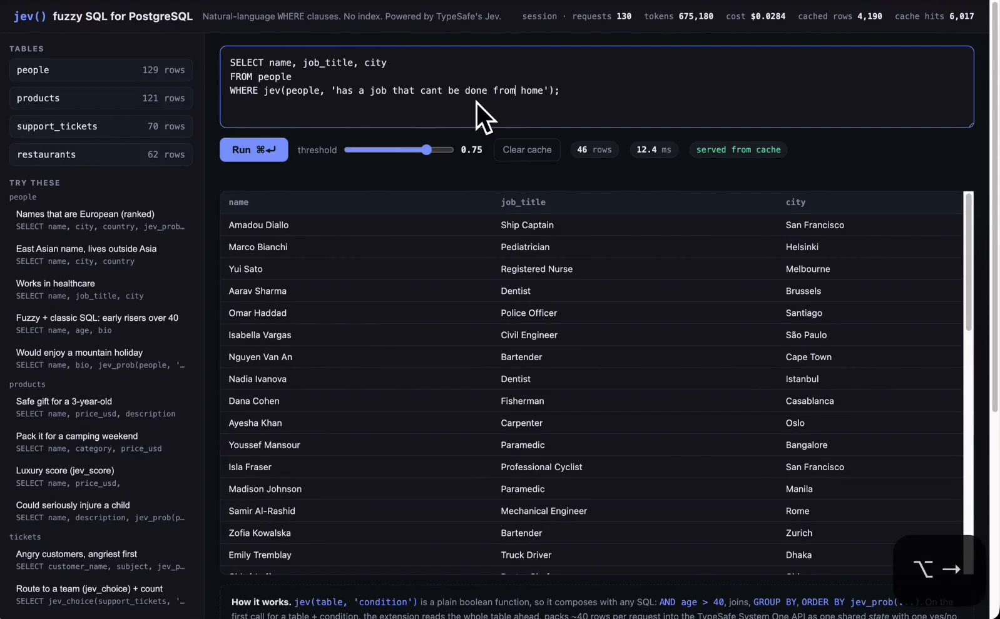

体験
判断は、SQLの関数として現れる。利用者は、ふだんのSQLと同じ手順で、条件を書き、実行し、行を読み、書き直す。新しい操作を覚える必要がない。
- 緑の1行が、何行を、何回の要求で、何トークン・いくら・何ミリ秒で判断したかを、実行のたびに示す。見えない判断のコストが、結果のすぐ上で読める。
- thresholdのスライダーが、確率をどこで切るかを利用者に渡している。説明では、しきい値の変更、並べ替え、再実行はキャッシュで済み、費用がかからない。
- 「served from cache」と「Clear cache」が、結果がいつの判断に基づくかを示し、判断をやり直す手段を与える。
- 結果の表には、行ごとの確率が出ていない（確率を列として取り出す
jev_probの例は、左の一覧にある）。なぜその行が選ばれたかは、表だけでは分からない。1枚目では、条件に「lives in europe」とあるが、表のcityには米国の都市が並んでいる。条件と結果がどう対応しているかは、画面から読み取れない。 - 左の例には、名前から地域を推し量る条件が含まれる。こうした条件は、人の属性の推測にあたる。意味による一致を、事実の検索と同じように扱わない配慮が要る。
キャプチャ
{kind=link}

（原寸の画像を開く）{kind=link}

（原寸の画像を開く）見る箇所SQLの入力欄の `WHERE jev(people, '…')`、Runとthresholdのスライダー（0.75）、「Clear cache」、行数・ミリ秒・API requests・tokens・cost、緑の行「jev: noul → judged 129 rows …」、2枚目の「served from cache」、左の「TRY THESE」、下の「How it works」
入力から画面の変化まで
-
判断への入力
SQL文。1枚目は
SELECT name, job_title, city FROM people WHERE jev(people, 'has a job that cant be done from home and lives in europe');。テーブルの全行と、自然文の条件が判断の対象になる。 -
Jevの判断
画面の表示は「jev: noul → judged 129 rows of people in 4 requests, 20879 input tokens (≈$0.0009), 963 ms」。行ごとに、条件に当てはまるかを確率で答える。「How it works」は、約40行を1回の要求にまとめて並列に送ること、答えが確率で、行の内容ごとにセッション中キャッシュされることを説明している。
-
結果がUIをどう変えるか
thresholdを超えた行だけが結果の表に出る。1枚目は8行・980.1ms・API requests 4・cost $0.0009。2枚目は条件を変えた再実行で、46行・12.4ms・「served from cache」。上端には、セッションの要求数、トークン、費用、キャッシュの行数とヒット数が出る。
- 判断型の見立て
- Noul出典に明記
- 画面の実行結果の行に「jev: noul → judged 129 rows …」と表示される。jev_scoreとjev_choiceは説明文に名前が出るだけで、動作は確認していない。
Jevとの適合
行ごとに、はい・いいえの確率を返す判断は、SQLの真偽の関数にそのまま収まる。速くて安いため、索引なしで全行を判断する使い方が成り立つ、というのが作者の主張で、投稿は129行を約1秒、2回目を6msと報告している。これらは作者の報告と画面の表示であり、こちらでは測っていない。
確認範囲と未確認事項
作者による投稿動画から静止画を確認。動画は作者の手元（localhost）の画面で、公開されたリポジトリは確認されていない。行数、所要時間、費用は画面の表示であり、こちらでは測っていない。意味による一致は客観的な事実ではない。動画には、名前から出身を推し量るような条件も出てくるが、こうした条件は人の属性の推測にあたり、扱いに注意が要る。
- 確認済み動画から得た2枚の静止画に見える画面（SQLの入力欄、Run、threshold、Clear cache、行数・時間・要求数・トークン・費用、「jev: noul → judged …」の行、結果の表、「served from cache」、例の一覧、「How it works」の説明）
- 未検証判断の妥当性、条件と結果の対応、行ごとの確率、所要時間と費用の実測、拡張のソースコードとリポジトリ、実データでの動作、人の属性に関わる条件の扱い
- 推定扱いなし。質問型は画面の表示（noul）による。
jev_scoreとjev_choiceは説明文に名前が出ているが、動作は確認していない - 引用動画から必要な範囲の静止画を切り出して引用（ブラウザの枠とサイドバーを除いた）。表の人名はデモ用のデータとして表示されているもの。権利は作者に帰属する